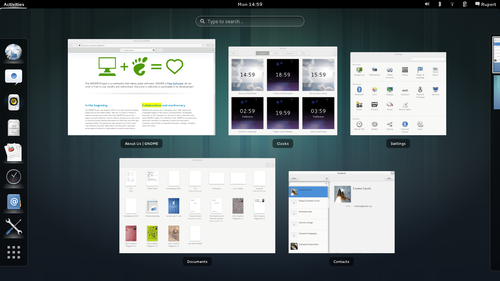

Geschichte von GNOME
GNOME (GNU Network Object Model Environment) ist eine grafische - in sich stimmige - Benutzeroberfläche für Linux- und Unix-Betriebssysteme, welche standardmäßig von Ubuntu GNOME genutzt wird. Es handelt sich um eine einfach anzuwendende und zugleich einsteigerfreundliche Benutzeroberfläche. Neben freier Software wird ebenfalls Wert auf Barrierefreiheit gelegt. Es ist durch die freien Lizenzen der GPL  und der LGPL lizenziert und Teil des GNU-Projektes .
und der LGPL lizenziert und Teil des GNU-Projektes .
Ins Leben gerufen wurde das Projekt im Jahre 1997 durch Miguel de Icaza und Federico Mena als Antwort auf KDE, das auf dem Qt-Toolkit aufbaut. Dieses lag damals unter keiner freien Software-Lizenz (Geschichte von KDE). Man entschied sich, für GNOME auf das GIMP-Toolkit (GTK+), welches in GIMP verwendet wird, zurückzugreifen. Als Programmiersprache für GTK wird C genutzt - dies sollte eine bessere Portabilität auf andere Systeme mit sich bringen.
Entwickler aus vielen Ländern arbeiten an dem Projekt mit und sichern die Qualität. Unterstützt wird das Projekt außerdem von Canonical , Debian  , der Free Software Foundation, Hewlett-Packard, IBM, Intel, Nokia, Novell, Red Hat und Sun Microsystems.
, der Free Software Foundation, Hewlett-Packard, IBM, Intel, Nokia, Novell, Red Hat und Sun Microsystems.
Ziele¶
|  |
| GNOME 3.x mit GNOME Shell |
Folgende Ziele liegen dem GNOME-Projekt zu Grunde:
Freie Software - folgt den Idealen der GPL-Richtlinien
Barrierefreiheit - Benutzbarkeit für alle
Internationalisierung - GNOME soll in möglichst vielen Sprachen zur Verfügung stehen
stimmiges, zusammenhängendes Oberflächendesign - Leitfaden
für das Oberflächendesign regelmäßige Veröffentlichungen - alle sechs Monate erscheint eine neue Version
Support - Hilfe für Anwender
Versionshistorie¶
GNOME 2¶
Seit dem Erschienen der ersten Ubuntu Version im September 2004 war GNOME fester Bestandteil von Ubuntu.
| GNOME 2 | |||
| Erschienen | Version | Verfügbar in | Änderungen |
| 09/2004 | 2.08 | Ubuntu 4.10 | Datenträger werden automatisch eingebunden - Evolution wird eingepflegt |
| 03/2005 | 2.10 | Ubuntu 5.04 | SoundJuicer & Totem sind im Paket enthalten |
| 09/2005 | 2.12 | Ubuntu 5.10 | Evince wird eingeführt |
| 04/2006 | 2.14 | Ubuntu 6.06 | Ekiga - SIP-Telefonate sind nun möglich. |
| 09/2006 | 2.16 | Ubuntu 6.10 | Tomboy wird eingeführt, AIGLX wird unterstützt. |
| 03/2007 | 2.18 | Ubuntu 7.04 | Verschlüsselung mit SeaHorse |
| 09/2007 | 2.20 | Ubuntu 7.10 | Alle Einstellungen zum Thema ("theme") wurden im Kontrollzentrum zusammengefasst. Nautilus wurde überarbeitet. |
| 03/2008 | 2.22 | Ubuntu 8.04 | Erweiterte Multimediafähigkeiten, verbesserte Netzwerkdateisysteme, eingebaute Desktop-Effekte; Neue Programme: Cheese und Vinagre |
| 09/2008 | 2.24 | Ubuntu 8.10 | Reiter und kompakte Listenansicht für Nautilus, Klangthemen, Integration von Empathy |
| 03/2009 | 2.26 | Ubuntu 9.04 | Integration von Brasero, Verbesserungen an Evolution, Totem und Empathy |
| 09/2009 | 2.28 | Ubuntu 9.10 | GNOME-Bluetooth, Kleinere Verbesserungen an diversen Programmen |
| 03/2010 | 2.30 | Ubuntu 10.04 | Geteilter Ansichtsmodus von Nautilus, leichteres Hinzufügen von neuen Benutzern, Neuerungen in Empathy, Tomboy, Evince und Vinagre |
| 09/2010 | 2.32 | Ubuntu 10.10, Ubuntu 11.04 | Metakontakte in Empathy, verbesserte PDF-Unterstützung, Neuer Dialog in Nautilus bei Konflikten beim Kopieren oder Verschieben |
GNOME 3¶
Nach Kritik am GNOME-Desktop, dass das Projekt stagniert und keine Visionen erkennbar sind und der daraus entstandenen Diskussion kündigte das GNOME-Release-Team die Entwicklung von GNOME 3.0 an. Im Gegensatz zum KDE Desktop soll GNOME 3.0 eine Weiterentwicklung und keine große Umwälzung sein. Dennoch wurden große Einschnitte vollzogen, so dass GNOME 3.x zum größten Teil nicht mehr abwärtskompatibel zu GNOME 2.x ist.
Canonical hat sich gegen die Nutzung der GNOME Shell entschieden und setzt seit Ubuntu 11.04 auf seine Eigenentwicklung Unity. In Ubuntu 11.04 konnte man ersatzweise noch GNOME 2.32 nutzten. Mit dem Erscheinen von Ubuntu 11.10 wurde Unity 2D eingeführt und zusätzlich wurden sämtliche GNOME Komponenten aktualisiert. Dadurch wurde es möglich die GNOME_Shell über die offiziellen Paketquellen nachinstallieren. Seit April 2013 steht mit Ubuntu GNOME nun auch eine offizielle Ubuntu-Variante mit GNOME 3.X zur Verfügung.
| GNOME 3 | |||
| Erschienen | Version | Verfügbar in | Änderungen |
| 04/2011 | 3.0 | - | GNOME setzt nun auf die GNOME Shell. Zum Darstellen von Fenstern wird Mutter eingesetzt. Es basiert auf den Fenstermanager Metacity, der in GNOME 2 zum Einsatz kam, und benutzt die Bibliothek Clutter. Neben der neuen Oberfläche wurde auch die Komponentenbibliothek GTK+ auf Version 3.0 und viele Kernanwendungen aktualisiert. Weiterführende Infos: Was lange währt, wird endlich gut!? GNOME 3 ist da! und Angesehen: GNOME 3.0 |
| 09/2011 | 3.2 | Ubuntu 11.10 | Mit dieser Version werden Erweiterungen eingeführt, mit denen sich u.a. verschwundene und von vielen Benutzern vermisste Funktionen nachrüsten lassen (siehe GNOME Shell). Darüber hinaus können einzelne ausgewählte Anwendungen mit Cloud-Diensten verzahnt werden. Einführung der Anwendungen Dokumente und "Kontakte". Mehr: GNOME 3.2 ist da und Angesehen: GNOME 3.2 |
| 12/2011 | MATE | nur per PPA | Hier handelt es sich um einen Versuch Dritter, das alte GNOME 2 in die Gegenwart zu retten. Dazu wurde die bisherige Codebasis der Version 2.32 in ein neues, von den GNOME Entwickler unabhängiges Projekt überführt. Leider mussten viele Standardanwendungen umbenannt werden, um Überschneidungen mit GNOME 3 zu vermeiden. |
| 01/2012 | Cinnamon | aktuelle Version per PPA | Mit Cinnamon (engl. für Zimt) ist eine weitere unabhängige Abspaltung, diesmal von GNOME 3, entstanden. Das Entwickler-Team versucht, auf Basis der GNOME Shell einen optischen und funktionalen Kompromiss zwischen GNOME 2 und 3 zu finden. |
| 03/2012 | 3.4 | Ubuntu 12.04 | Überarbeitung des Anwendungsmenü. Viele weitere Anwendungen wurden optimiert und besser in GNOME 3 integriert. Dabei wurde Epiphany in Web umbenannt. Siehe auch: GNOME 3.4 – Das nächste große Update ist da und Angesehen: Gnome 3.4 |
| 09/2012 | 3.6 | teilweise in Ubuntu 12.10; vollständig in Ubuntu GNOME 13.04 | Zentrale Programme wurden überarbeitet und umbenannt: Files/Dateien = Nautilus, Videos = Totem usw… Beim Dateimanager hatte die Überarbeitung zur Folge, dass einige Funktionen, wie zum Beispiel die Zwei-Spalten-Ansicht, entfernt wurden. In der GNOME Shell kann man nun über ein Button in die Anwendungsübersicht wechseln. Die untere Statusleiste und der Sperrbildschirm wurde überarbeitet. Weitere Informationen: GNOME 3.6 – Das vierte GNOME Release ist da, Angesehen: Gnome 3.6 und Gnome 3.6 – Welche Neuerungen erwarten uns? |
| 03/2013 | 3.8 | Ubuntu GNOME 13.10 | Die Kategorisierung der Anwendungen wurde entfernt. Nun kann man nur noch zwischen "allen Anwendungen" und den "häufig eingesetzten" wählen. Der Fallback-Modus (auch „GNOME Classic“) wurde entfernt und durch eine durch Erweiterungen angepasste GNOME Shell ersetzt. Siehe auch: GNOME 3.8 ist veröffentlicht und Traditionelle Desktop-Elemente und neue Anwendungen für Gnome 3 |
| 09/2013 | 3.10 | Ubuntu GNOME 14.04 | Die Anwendungsübersicht wurde verbessert. GNOME wurde für Bildschirme mit sehr hoher Auflösung optimiert. Der Sperrbildschirm kann nun ein anderes Bild als der Desktop-Hintergrund verwenden. Die Status- und Hardware-Kontroll-Menüs im rechten Bereich des oberen Panels sind nun in einem Menü zusammengefasst worden. Anwendungen wurden verbessert und es kamen die Anwendungen "Maps", "Notes", "Music", "Photos" und "Software" hinzu. Bei vielen Programme ist die Werkzeugleiste nun in die Titelleiste des Fensters integriert. Außerdem wurde das "GNOME-Tweak-Tool" überarbeitet. „GNOME Classic“ ist wieder zurück, nur hat dieser Modus nichts mehr mit dem ehemaligen GNOME3 Fallback-Modus zu tun. Mehr Informationen: Ein neues Update für GNOME: 3.10 ist da! und Neues in Gnome 3.10 |
| 03/2014 | 3.12 | Ubuntu GNOME 14.10 | Die Umarbeitung der eigenen Kernanwendungen wurde fortgesetzt. Bei fast allen Kernanwendungen ist nun die Titelzeile mit der Navigation kombiniert. Der Editor Gedit und der Videoplayer "GNOME Videos" ehemals Totem wurden vollständig neu gestaltet. Das Systemstatusmenü wurde wieder um die Funktion kabelgebundene Netzwerke an- oder abzuschalten ergänzt. Außerdem ist es nun möglich, desktopweit den Zugriff auf den eigenen Standort zu erlauben oder zu verbieten. Auch der Flugmodus wurde überarbeitet. Das Rechtsklickmenü bei den Anwendungsstartern wurde um eine "Jumplists" Funktion erweitert, ähnlich wie z.B. bei Unity. Die vollständige Waylandunterstützung wurde erneut verschoben. Alle Neuerungen: GNOME 3.12 ist da!, GNOME 3.12 bringt "Jumplists" und neue Videos-Anwendung und Angesehen: GNOME 3.12 |
| 09/2014 | 3.14 | Ubuntu GNOME 15.04 | |
| 03/2015 | 3.16 | Ubuntu GNOME 15.10 | Gnome 3.16 erschienen |
| 09/2015 | 3.18 | Ubuntu GNOME 16.04 | Linux-Desktop Gnome 3.18 mit Google-Drive-Support freigegeben |
| 03 / 2016 | 3.20 | Ubuntu GNOME 16.10 | 16.10 Release Notes |
| 03 / 2017 | 3.24 | Ubuntu GNOME 17.04 | 17.04 Release Notes |
- Erstellt mit Inyoka
-
 2004 – 2017 ubuntuusers.de • Einige Rechte vorbehalten
2004 – 2017 ubuntuusers.de • Einige Rechte vorbehalten
Lizenz • Kontakt • Datenschutz • Impressum • Serverstatus -
Serverhousing gespendet von